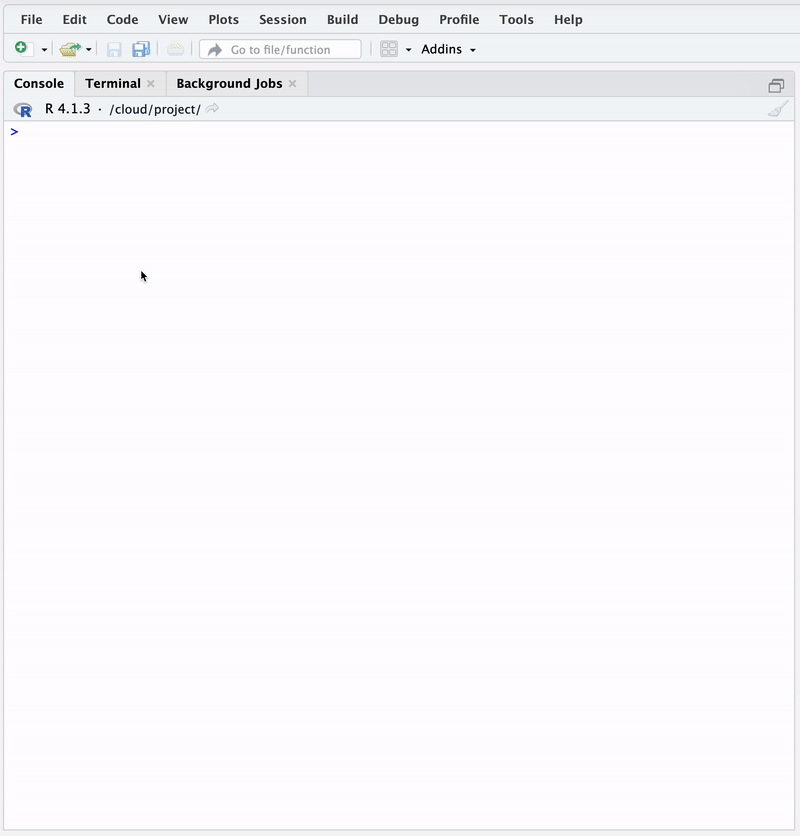
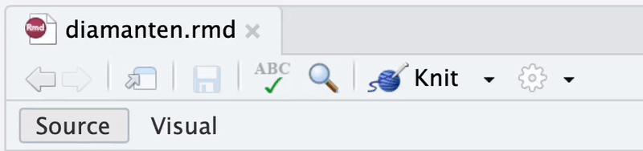
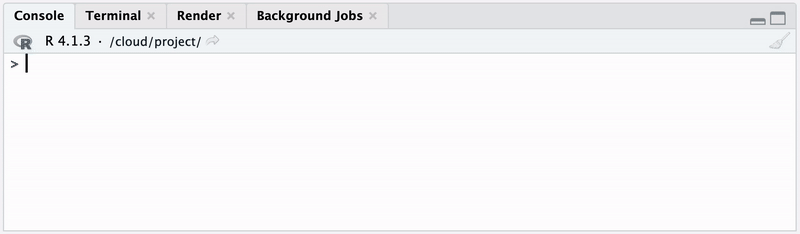
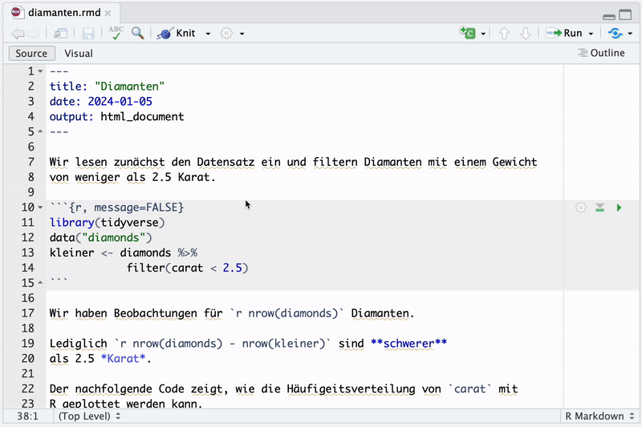
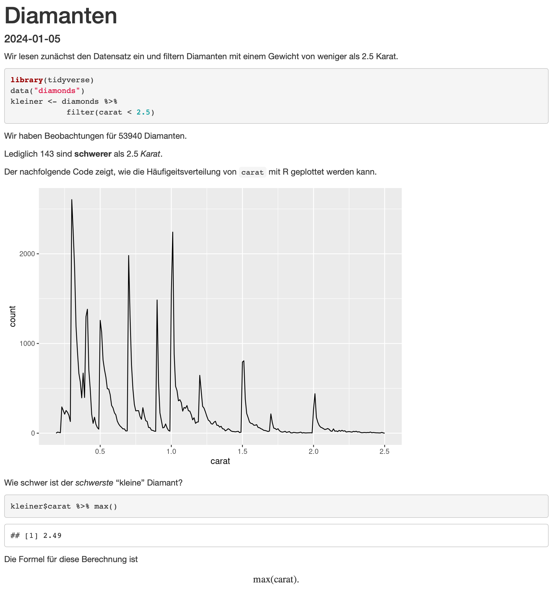
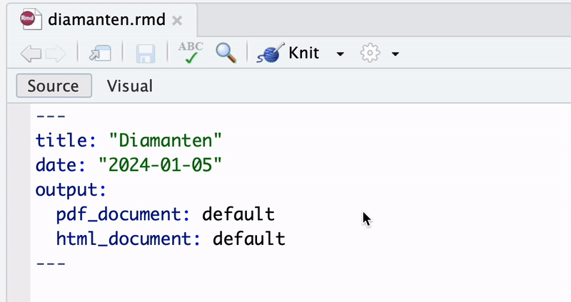
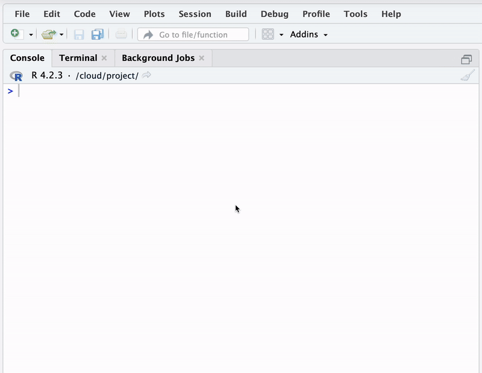
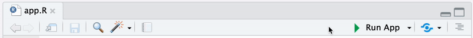
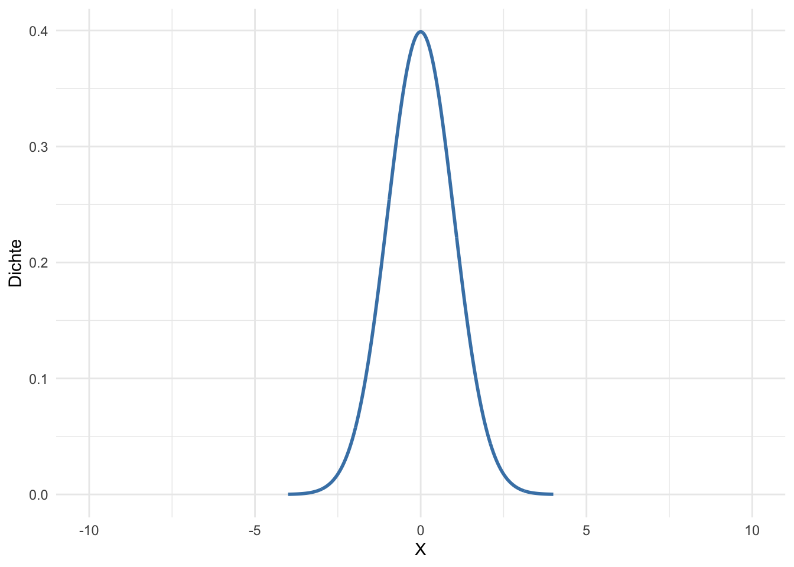

Warning: package 'gt' was built under R version 4.3.33 Reproduzierbarkeit
In vielen empirischen Forschungsfeldern ist die Reproduzierbarkeit von Studienergebnissen von zentraler Bedeutung. Durch systematische Überprüfung und Bestätigung (oder Widerlegung) wird die Aussagekraft und Verlässlichkeit wissenschaftlicher Erkenntnisse gewährleistet. Dieser Validierungsprozess ist entscheidend für weiterführende Forschung: Auf verifizierbaren Ergebnissen können neue Hypothesen aufbauen und bestehende Theorien weiterentwickelt werden.
Auch in mehrheitlich nicht-experimentellen Disziplinen wie den empirischen Wirtschaftswissenschaften ist die Reproduzierbarkeit von Forschung zunehmend relevant. In diesen Bereichen ist die datengetriebene Analyse mit statistischer Programmierung oft der zentrale Bestandteil wissenschaftlicher Studien. In vielen empirischen Forschungsarbeiten führt die Anwendung statistischer Methoden unmittelbar zu den Studienergebnissen, sodass eine transparente Dokumentation der Arbeitsweise und die Bereitstellung von reproduzierbaren Programm-Codes von großer Bedeutung ist.
Das R-Ökosystem bietet diverse Tools zur Gewährleistung von Reproduzierbarkeit und Kommunikation von Forschungsergebnissen. RMarkdown (Allaire u. a. 2024) erlaubt es, Datenanalysen, Visualisierungen, Code und die dazugehörige Dokumentation nahtlos in einem einzigen Dokument zu kombinieren. Dies erleichtert nicht nur die Nachvollziehbarkeit von Analysen, sondern ermöglicht es auch, die Ergebnisse mühelos in verschiedene gängige Formate wie HTML, PDF oder Word zu konvertieren und verfügbar zu machen.1 Das R-Paket Shiny (Chang u. a. 2024) ermöglicht es Forschenden ohne umfangreiche Erfahrung in Webentwicklung interaktive Webanwendungen und Dashboards mit R zu erstellen.2
1 Für eine ausführliche Erläuterungen vieler Funktionen von RMarkdown empfehlen wir Xie, Allaire, und Grolemund (2023).
2 Wickham und Safari (2021) ist ein Standardwerk für Webapplikationen mit Shiny.
In diesem Kapitel erläutern wir Grundzüge der reproduzierbaren Forschung mit RMarkdown und geben eine Einführung in die Entwicklung interaktiver Visualisierungen für Studienergebnisse mit Shiny.
3.1 RMarkdown
Reproduzierbare Forschung meint Prozesse, bei denen Forschende ihre Analysen und Ergebnisse so dokumentieren, dass sie von anderen exakt nachvollzogen und durch Wiederholung der dokumentierten Vorgehensweise reproduziert werden können. Die Anforderungen an solche Prozesse können im Wesentlichen anhand von drei Kriterien zusammengefasst werden:
Transparenz: Der gesamte Analyseprozess sollte für Dritte einsehbar und transparent sein. Die Nachvollziehbarkeit des Prozesses sollte durch adäquate Dokumentation sämtlicher Schritte gewährleistet sein.
Automatisierung: Analysen sollten möglichst automatisiert durchgeführt werden, um das Risiko menschlicher Fehler (zum Beispiel bei der Datenverarbeitung oder bei Berechnungen) gering zu halten.
Teilbarkeit: Die verwendeten Daten, der Code und die Ergebnisse sollten leicht geteilt und überprüft werden können, idealerweise anhand eines (Datei)Formats, das geringe technische Anforderungen hinsichtlich der Reproduzierbarkeit der Inhalte voraussetzt.
RMarkdown ist ein Dokumentationsformat im R-Ökosystem, das es Nutzern ermöglicht die oben genannten Anforderungen an reproduzierbare Forschung zu erfüllen. Es kombiniert die Funktionalitäten von Markdown, einer schlanken Markup-Sprache für Textformatierung, mit der Möglichkeit, direkt in R geschriebenen Code auszuführen und die Ergebnisse, einschließlich Tabellen und Grafiken in ein Ziel-Dokument einzubinden.
3.1.1 Struktur
Ein typisches Rmarkdown-Dokument (eine .rmd-Datei) besteht aus drei Hauptkomponenten:
-
YAML-Header: Dieser Bereich am Anfang des Dokuments wird durch
---eingegrenzt und enthält Metadaten wie den Titel, Autor, Datum und das gewünschte Ausgabeformat (z. B. PDF, HTML, Word). Den Argumenten können, je nach Definition, Objekte des Typsnumeric,characteroderfunctionübergeben werden. Der nachfolgende Chunk definiert ein Dokument mit dem Titel, Autor und Datumsangabe sowie eine Ausgabe als HTML-Dokument.--- title: "Reproduzierbare Forschung mit R" author: "Martin Arnold" date: "24. April 2023" output: html_document --- -
Code-Chunks und Inline-Code: Code-Chunks enthalten ausführbaren R-Code (oder auch Code in anderen unterstützten Sprachen wie Python, SQL usw.), der während der Erstellung des Ausgabedokuments ausgeführt wird. Die Ergebnisse des Codes (z.B. Outputs von Schätzfunktionen wie
lm(), Grafiken oder Tabellen) werden, gemeinsam mit dem Code, direkt im Dokument angezeigt. Ein einfacher Code-Chunk ist folgendermaßen aufgebaut:```{r} # Ein einfacher Code-Chunk 1 + 1 ```Code-Chunks können mit Optionen versehen werden, die das Verhalten von Knitr beim Auswerten des Codes festlegen. Das Schema hierfür ist
```{r, option = wert}, wobei mehrere Optionen komma-getrennt gesetzt werden können. Einige nützliche Optionen3 (und ihre Standardwerte) sind:-
eval (TRUE): Gibt an, ob der Code-Chunk ausgeführt werden soll -
echo (TRUE): Gibt an, ob (oder welche Zeilen des) Quellcodes eines Chunks ausgegeben werden sollen -
cache (FALSE): Gibt an, ob die Ergebnisse des Code-Chunks zwischengespeichert werden sollen -
warning (TRUE): Gibt an, ob Warnungen ausgegeben werden sollen -
message (TRUE): Gibt an, ob Hinweise ausgegeben bleiben sollen -
include (TRUE): Gibt an, ob der Code-Chunk im Ausgabedokument enthalten sein soll
Inline-Code kann im Fließtext verwendet werden, um die Ergebnisse einzeiligen Codes (oft kleine Rechnungen oder der Inhalt eines Objekts) direkt im Text (s.u.) auszugeben. Inline-Code-Ausdrücke können wie folgt ausgewertet werden:
`r 1+1` -
Markdown-formatierter Text: Dies sind Abschnitte mit Fließtext, der in der Markdown-Syntax formatiert wird. Hierbei können Textformatierungen wie Überschriften, Listen, Links, Bilder aus externen Dateien und weitere Elemente durch kurze Befehle erstellt oder eingebunden werden. Zur Erläuterung statistischer Methoden können \(\LaTeX\)-Formeln in Text-Abschnitten gesetzt werden.
3 Ausführliche Erläuterungen und weitere Optionen können hier eingesehen werden.
3.1.2 Datei erstellen und kompilieren
Um eine .Rmd-Datei in das gewünschte Output-Format umzuwandeln (zu kompilieren), sind mehrere Software-Pakete und Schritte erforderlich:
RStudio-Installation: Obwohl RMarkdown auch über die Befehlszeile (R-Konsole / R-GUI) ausgeführt werden kann, ist RStudio die empfohlene Entwicklungsumgebung, da es eine benutzerfreundliche Schnittstelle bietet, mit der
.Rmd-Dateien leicht erstellt, bearbeitet und kompiliert werden können. Beachte: Für die Verwendung von RStudio muss die R-Konsole installiert sein.-
rmarkdown-Paket: Um.Rmd-Dateien verarbeiten zu können, muss das R-Paketrmarkdowninstalliert sein. Dies erfolgt über die R-Konsole oder in RStudio mit folgendem Befehl:# RMarkdown installieren install.packages("rmarkdown") -
Format-abhängige Pakete: Um HTML-Output zu erzeugen, sind zusätzlichen Pakete erforderlich, da die erforderlichen Abhängigkeiten mit dem
rmarkdown-Paket installiert werden. Für PDF-Output-Formate muss eine \(\LaTeX\)-Distribution verfügbar sein.4 \(\LaTeX\) wird verwendet, um das Dokument in ein professionell formatiertes PDF zu konvertieren. Für Anfänger empfiehlt sich die Nutzung von TinyTeX, eine kompakte Distribution, die direkt über die R-Konsole installiert werden kann:# tinytex-LaTeX-Distribution installieren install.packages("tinytex") tinytex::install_tinytex()
4 LaTeX-Formeln in HTML-Outputs können ohne eine \(\LaTeX\)-Installation erzeugt werden. Hierbei werden Formeln im Web-Browser mit MathJax dargestellt.
Sind diese Komponenten der vorhanden, ist RMarkdown in der Lage den Kompilierungsprozess durchzuführen. Der grobe Ablauf ist in Abbildung 3.1 dargestellt und erfolgt so:
Die von R-Code abhängigen Komponenten des
.Rmd-Dokuments werden ausgeführt. Sämtliche Strukturelemente und ihre Ergebnisse werden durch das Toolknitrin ein Markdown-Dokument (Dateiendung.md) übersetzt.5Das in Schritt 1 erzeugte Markdown-Dokument wird dem Tool pandoc übergeben. Pandoc ist ein Open-Source-Tool zur Dokumentenkonvertierung, das Texte in zahlreiche verschiedene Formate transformiert, darunter HTML, PDF, Word, und viele weitere. Die Formatierung und Bereitstellung des Outputs erfolgt gemäß der im YAML-Header festgelegten Format-Funktion (
output: ...).
5 Dieser Prozess wird auch als knitting (engl. stricken) bezeichnet: sämtliche Komponenten werden nach Ausführung des R-Codes zusammengestrickt und in ein .md-Format überführt.

Um eine neue .rmd-Datei in RStudio zu erstellen und zu kompilieren, nutzen wir die Menü-Schaltflächen Datei \(\rightarrow\) Neue Datei und wählen R markdown im Kontextmenü aus. In dem sich anschließend öffnenden Dialog sind bereits Standard-Einstellungen für ein einfaches HTML-Dokument gesetzt.6 Nach Bestätigung der Konfiguration mit “OK” wird ein .Rmd-Dokument mit Beispiel-Code geöffnet. Abbildung 3.2 zeigt diesen Ablauf.
6 Die hier erfolgte Konfiguration setzt lediglich rudimentäre Optionen im YAML-Header, die später angepasst werden können.

.Rmd-Datei erstellen
Das neue .Rmd-Dokument kann nun bearbeitet werden. Beachte, dass Code-Chunks (grau hinterlegt) direkt im Dokument ausgeführt werden können und das Ergebnis im Editor angezeigt wird. Dies erfolgt durch Klick auf den “Play”-Button im jeweiligen Chunk.7 Abbildung 3.3 zeigt diesen Vorgang für zwei Chunks in standardmäßig bereitgestellten Minimalbeispiel. Die so ggf. erzeugten R-Objekte werden in der Arbeitsumgebung von RStudio zugeordnet.
7 Eine Keyboard-Shortcut zum Ausführungen von Chunks ist CMD + Enter in MacOS und STRG + Enter bei Windows.

.Rmd-Datei ausführen
.Rmd-Dateien sind also eine Alternative zur Programmierung von R-Code in einem R-Skript (einer .R-Datei), die dem Nutzer mehr Komfort und die Möglichkeit zu Literate Programming bietet. Literate Programming meint die Praxis, Quellcode und erklärenden Text so zu kombinieren, dass der Code von Menschen besser verstanden werden kann. Der Fokus liegt dabei darauf, den Programmablauf verständlich zu dokumentieren, indem Code und dessen Beschreibung in einem einzigen Dokument integriert werden. So werden nicht nur die technischen Aspekte der Analyse dargestellt, sondern auch der gedankliche Prozess hinter der Analyse klar und nachvollziehbar.
Nach erstmaligem Abspeichern der .Rmd-Datei (hier unter dem Namen diamanten.rmd) kann das Dokument kompiliert werden. Hierzu klicken wir in der Aktionsleiste unterhalb des Dokumenten-Tabs auf den Button “Knit”, siehe Abbildung 3.4.8
8 Eine Keyboard-Shortcut zum Kompilieren der .Rmd-Datei ist CMD + Shift + k in MacOS und STRG + Shift + k bei Windows.

.Rmd-Datei kompilieren
RMarkdown beginnt nun mit der Kompilierung des Dokuments, wobei der Ablauf in Abbildung 3.1 für das entsprechende Output-Format ausgeführt wird. Der Fortschritt der Kompilierung wird im Tab “Render” angezeigt und informiert zunächst über die Ausführung der Code-Chunks und zeigt anschließend den Log für die Umwandlung in das Output-Format mit pandoc, siehe Abbildung 3.4.

Wenn dieser Prozess fehlerfrei abschließt, wird im Verzeichnis von diamanten.rmd eine gleichnamige Datei mit der Endung .html erstellt. Die erzeugte HTML-Datei wird automatisch im Vorschaufenster von RStudio angezeigt, kann jedoch auch in jedem Webbrowser dargestellt und damit zur Reproduktion der Analyse an andere weitergegeben werden.
3.1.3 Ein Beispiel
Das folgende Minimalbeispiel zeigt den Aufbau einer .Rmd-Datei für eine kurze Analyse des Datensatzes ggplot2::diamonds unter Verwendung der oben erläuterten Definitionen und Strukturelemente:
Im YAML-Header definieren wir den Output als HTML-Dokument mit dem Titel “Diamanten” sowie einer Datumsangabe.
Die Datei enthält zwei Code-Chunks, die den Datensatz
ggplot2::diamondseinlesen, unter Verwendung vondplyr-Funktionen transformieren und eine kleine graphische Auswertung mitggplot2erstellen.Die Schritte der Analyse werden im Fließtext zwischen den Code-Chunks erläutert. Hierbei kommt sowohl Markdown-Syntax zur Formatierung zum Einsatz als auch Inline-Code um Informationen mit R-Code zu berechnen und unmittelbar in die Erläuterungen einzubinden. Dank dieser Vorgehensweise passen sich die Erklärungen der Analyse automatisch an, wenn die verwendeten Variablen in den Code-Chunks geändert werden.
Der letzte Textblock verwendet \(\LaTeX\)-Code, um die zuvor mit R-Code durchgeführte Berechnung zu erläutern.
diamanten.Rmd:
---
title: "Diamanten"
date: 2024-01-05
output: html_document
---
Wir lesen zunächst den Datensatz ein und filtern Diamanten mit einem Gewicht
von weniger als 2.5 Karat.
```{r}
library(tidyverse)
data("diamonds")
kleiner <- diamonds %>%
filter(carat < 2.5)
```
Wir haben Beobachtungen für `r nrow(diamonds)` Diamanten.
Lediglich `r nrow(diamonds) - nrow(kleiner)` sind **schwerer**
als 2.5 *Karat*.
Der nachfolgende Code zeigt, wie die Häufigkeitsverteilung von `carat` mit
R geplottet werden kann.
```{r, echo = FALSE}
kleiner %>%
ggplot(aes(carat)) +
geom_freqpoly(binwidth = 0.01)
```
Wie schwer ist der *schwerste* "kleine" Diamant?
```{r}
kleiner$carat %>% max()
```
Die Formel für diese Berechnung ist $$\max(\textup{carat}).$$Eine .rmd-Datei mit dem obigen Code kann hier heruntergeladen werden. Alternativ kann in RStudio ein neues Dokument erstellt werden (siehe Kapitel 3.1.2) und der Inhalt kopiert und eingefügt werden.

diamonds.Rmd kompilieren
Nach der Kompilierung des Dokuments mit knitr (siehe Abbildung 3.6) erhalten wir das in Abbildung 3.7 gezeigte HTML-Dokument. Das Resultat ist eine Webseite, die hier eingesehen werden kann.

Sofern eine \(\LaTeX\)-Distribution installiert ist, kann der Output ohne weiteren Aufwand als PDF-Datei generiert werden. Hierzu setzen wir über das Kontext-Menü neben dem “Knit”-Button im Dokumenten-Tab die Option Knit to PDF, siehe Abbildung 3.8. RMarkdown beginnt dann unmittelbar mit der Kompilierung des Dokuments und erzeugt anschließend mit pandoc und dem \(\LaTeX\)-Compiler die PDF-Datei diamonds.pdf im entsprechenden Arbeitsverzeichnis.

Abbildung 3.9 zeigt das finale PDF-Dokument diamanten.pdf.
3.1.4 Tabellen
In RMarkdown können einfache Tabellen durch Markup-Syntax erstellt werden. Hierbei werden die Zeichen “-”, “|” und “:” kombiniert, um die Dimensionen und die Formatierung der Tabelle zu definieren: Jede Spalte wird durch senkrechte Striche getrennt. Die Kopfzeile der Tabelle wird mit Bindestrichen unterhalb definiert. Um die Ausrichtung der Inhalte in den Spalten festzulegen, verwendet man unterhalb der Kopfzeile Doppelpunkte in den Spaltendefinitionen.
Der nachfolgende Markdown-Code-Chunk definiert eine Tabelle mit vier Zeilen und vier Spalten, deren Inhalte unterschiedliche Ausrichtungen haben. Tabelle 3.1 ist das Ergebnis.
| rechts | links | standard | zentriert |
|-------:|:------|----------|:---------:|
| 12 | 12 | 12 | 12 |
| 123 | 123 | 123 | 123 |
| 1 | 1 | 1 | 1 || rechts | links | standard | zentriert |
|---|---|---|---|
| 12 | 12 | 12 | 12 |
| 123 | 123 | 123 | 123 |
| 1 | 1 | 1 | 1 |
Oft ist es wünschenswert, die Ergebnisse statistischer Analysen in einer Tabelle darzustellen. Das R-Paket knitr bietet mit knitr::kable() eine rudimentäre Funktion, um den Inhalt eines “rechteckigen” R-Objekts9 für diverse Output-Typen zu formatieren.
9 Hierzu zählen typische Formate wie Vektoren, Matrizen, data.frames und tibbles.
10 Bei Kompilierung zu PDF (Kapitel 3.1.2) erzeugt kable() automatisch eine entsprechende \(\LaTeX\)-Tabelle.
Im nächsten Code-Chunk definieren wir eine Matrix m mit den numerischen Werten aus Tabelle 3.1 und nutzen kable() für eine Transformation in ein HTML-kompatibles tabellarisches Format.10 Tabelle 3.2 zeigt das Ergebnis.
```{r}
library(tidyverse)
# matrix erzeugen
m <- matrix(
c(12, 123, 1),
nrow = 3,
ncol = 4,
byrow = TRUE
)
# Spaltennamen festlegen
colnames(m) <- c("rechts", "links",
"standard", "zentriert")
# Tabelle Erzeugen
knitr::kable(
m,
align = c("r", "l", "l", "c"),
format = "html"
)
```| rechts | links | standard | zentriert |
|---|---|---|---|
| 12 | 123 | 1 | 12 |
| 123 | 1 | 12 | 123 |
| 1 | 12 | 123 | 1 |
knitr::kable() erzeugte tabellarische Darstellung der Matrix m
Statistische Analysen profitieren erheblich von einer klaren und strukturierten Aufbereitung der Ergebnisse in Tabellen. Es gibt zahlreiche R-Pakete, die aus Modell-Objekten, wie sie beispielsweise von der Funktion lm ausgegeben werden, informative tabellarische Darstellungen der Regressionsergebnissen zu erzeugen.
Ein modernes und vielseitiges Paket für diesen Zweck ist modelsummary. Mit modelsummary können wir die Ergebnisse direkt in gut formatierte Tabellen exportieren, die in verschiedenen Formaten wie HTML, \(\LaTeX\) oder Word ausgegeben werden können. Darüber hinaus bietet das Paket viele Optionen zur Anpassung des Outputs, etwa das Hinzufügen von Konfidenzintervallen, statistischen Tests oder zusätzlichen Statistiken.
Zur illustration von modelsummary() schätzen wir nachfolgend das einfache Regressionsmodell
\[\begin{align*} \textup{price} = \beta_0 + \beta_1 \textup{carat} + u \end{align*}\]
anhand des Datenusatzes ggplot2::diamonds, um den Einfluss des Gewichts von Diamanten auf ihren Verkaufspreis zu untersuchen.
# `diamonds` zuweisen
df <- ggplot2::diamonds
# Regression durchfühen
(
s <- summary(
lm(formula = price ~ carat, data = df)
)
)
Call:
lm(formula = price ~ carat, data = df)
Residuals:
Min 1Q Median 3Q Max
-18585.3 -804.8 -18.9 537.4 12731.7
Coefficients:
Estimate Std. Error t value Pr(>|t|)
(Intercept) -2256.36 13.06 -172.8 <2e-16 ***
carat 7756.43 14.07 551.4 <2e-16 ***
---
Signif. codes: 0 '***' 0.001 '**' 0.01 '*' 0.05 '.' 0.1 ' ' 1
Residual standard error: 1549 on 53938 degrees of freedom
Multiple R-squared: 0.8493, Adjusted R-squared: 0.8493
F-statistic: 3.041e+05 on 1 and 53938 DF, p-value: < 2.2e-16Für eine professionelle tabellarische Darstellung der Regressionsergebnisse übergeben wir das Objekt s in einer bennanten Liste an modelsummary(). Mit star = T erhalten wir Signifikanzzeichen an den geschätzten Koeffizienten. output = "gt" legt fest, dass das Paket gt für die Formatierung der Tabelle verwendet werden soll.11 Tabelle 3.3 zeigt die tabellierten Regressionsergebnisse.
11 Mit dieser Konfiguration werden die meisten Tabellen in diesem Buch erzeugt.
Warning: package 'modelsummary' was built under R version 4.3.3`modelsummary` 2.0.0 now uses `tinytable` as its default table-drawing
backend. Learn more at: https://vincentarelbundock.github.io/tinytable/
Revert to `kableExtra` for one session:
options(modelsummary_factory_default = 'kableExtra')
options(modelsummary_factory_latex = 'kableExtra')
options(modelsummary_factory_html = 'kableExtra')
Silence this message forever:
config_modelsummary(startup_message = FALSE)library(gt)
# Regressionsoutput mit modelsummary darstellen
modelsummary(
models = list("Abh. Variable: price" = s),
stars = T,
output = "gt"
)| Abh. Variable: price | |
|---|---|
| (Intercept) | -2256.361*** |
| (13.055) | |
| carat | 7756.426*** |
| (14.067) | |
| Num.Obs. | 53940 |
| R2 | 0.849 |
| R2 Adj. | 0.849 |
| RMSE | 1548.53 |
| + p < 0.1, * p < 0.05, ** p < 0.01, *** p < 0.001 | |
modelsummary und gt erstellte tabellarische Zusammenfassung einer Regression
3.1.5 Mathematische Formeln
In RMarkdown können mathematische Formeln sowohl inline (innerhalb einer Textzeile) als auch als Blockgleichungen gesetzt werden. Inline-Gleichungen werden direkt im Fließtext platziert. Wir verwenden einzelne Dollarzeichen $…$, um den mathematischen Ausdruck zu markieren.
Beispiel: Inline-Gleichung
Die Gleichung $y = \beta_0 + \beta_1x$ beschreibt eine lineare Funktion.
In mit RMardkown kompilierten Dokumenten wird dieser Satz dargestellt als:
Die Gleichung \(y = \beta_0 + \beta_1x\) beschreibt eine lineare Funktion.
Blockgleichungen stehen separat vom Text, zentriert und hervorgehoben. Sie werden mit doppelten Dollarzeichen eingefasst:
$$ ... $$Beispiel: Block-Gleichung
Der Ausdruck
$$y = \beta_0 + \beta_1 x$$erscheint im kompilierten Dokument als
\[y = \beta_0 + \beta_1x.\]
Mit Gleichungs-Umgebungen wie \begin{align}…\end{align} können mehrzeilige Gleichungen dargestellt werden. Hierbei wird dient & als Anker-Punkt für die Ausrichtung der Gleichungen. Mit \\ wird eine neue Zeile begonnen.
Beispiel: Normale Dichtefunktion
Der Ausdruck
\begin{align*}
f(x) &= \frac{1}{\sigma \sqrt{2\pi}}
\exp\left( -\frac{(x - \mu)^2}{2\sigma^2} \right) \\
&= \frac{1}{\sigma \sqrt{2\pi}}
\exp\left( -\frac{x^2 - 2x\mu + \mu^2}{2\sigma^2} \right)
\end{align*}erscheint im kompilierten Dokument als
\[\begin{align*} f(x) &= \frac{1}{\sigma \sqrt{2\pi}} \exp\left( -\frac{(x - \mu)^2}{2\sigma^2} \right) \\ &= \frac{1}{\sigma \sqrt{2\pi}} \exp\left( -\frac{x^2 - 2x\mu + \mu^2}{2\sigma^2} \right). \end{align*}\]
3.2 Shiny
Shiny ist ein R-Paket, das die Erstellung interaktiver Webanwendungen (Apps) und Dashboards direkt aus R heraus ermöglicht. Mit Shiny können Nutzer dynamische, datengetriebene Visualisierungen und interaktive Elemente wie Slider, Dropdown-Menüs und Schaltflächen in ihren Anwendungen einbinden, ohne hierzu üblicherweise erforderliche Web-Standards wie HTML, CSS und JavaScript sowie die server-seitige Ausführung von R-Programmcode zu beherrschen.12 Die Anwendungen laufen entweder lokal auf dem eigenen Rechner oder können über einen Webserver bereitgestellt werden (Hosting), sodass sie über das Internet zugänglich sind.13
12 Kenntnisse in der Programmierung von Websiten sind jedoch hilfreich für das Fine-Tuning von Shiny-Applikationen.
13 Für Online-Hosting fallen in der Regel Gebühren an. Kleine Applikationen mit beschränkter Laufzeit können über RStudio auf shinyapps.io kostenfrei gehostet werden.
Shiny-Apps eignen sich besonders gut für die Bereitstellung von Data-Science-Tools: Nutzer einer Shiny-Anwendung können die Parameter der Analyse ändern und sehen unmittelbar, wie sich diese Änderungen auf die Ergebnisse auswirken, was die Nachvollziehbarkeit erhöht. Da die zugrunde liegenden R-Codes in die Anwendung eingebettet sind, bleibt der gesamte Analyseprozess offen zugänglich, und andere Forschende können die Anwendung nutzen, um die Ergebnisse auf ihre eigenen Daten anzuwenden oder die Schritte zu reproduzieren. Diese “interaktive Transparenz” fördert also die Reproduzierbarkeit datengetriebener Analysen, indem sie nicht nur den Code, sondern den gesamten Analyseablauf zugänglicher macht.
Shiny ermöglicht zudem eine effektive Kommunikation von Forschungsergebnissen, indem komplexe Analysen in interaktive, leicht verständliche Webanwendungen überführt werden. Dies erleichtert die Vermittlung von Ergebnissen erheblich, insbesondere für Nicht-Experten, und trägt dazu bei, dass Forschungserkenntnisse nicht nur reproduzierbar, sondern auch zugänglicher und verständlicher gemacht werden.
3.2.1 Grundlagen
Ein Shiny-Projekt kann ähnlich wie ein RMarkdown-Projekt direkt in RStudio entwickelt werden. Dazu wählen wir im Menü für eine neue Datei: File \(\rightarrow\) New File \(\rightarrow\) Shiny Web App…. Im folgenden Dialogfeld müssen lediglich der Name der Applikation sowie optional das Arbeitsverzeichnis festgelegt werden. Standardmäßig kann der gesamte Code der Applikation in einer einzigen Datei namens app.R organisiert werden. Diese Datei wird nach einem Klick auf “Create” erstellt, siehe Abbildung 3.10.

Der nächste Code-Chunk zeigt den grundsätzlichen Aufbau einer Shiny-App. Dieser besteht aus drei Komponenten:
Benutzer-Interface: In
ui <- fluidPage()definieren wir das Layout und die Darstellung der App. Der FunktionfluidPage()können Funktions-Objekte übergeben werden, die verschiedene Benutzeroberflächenelemente wie Schaltflächen, Schieberegler, Eingabefelder und auch Ausgabeelemente (z.B. eine Grafik) definiert und ihre Anordnung strukturiert.Server-Logik: In
server <- function(input, output, session) {...}wird die Funktionsweise der App mit R-Code programmiert. Hier legen wir fest, wie Reaktionenen auf Benutzereingaben verarbeitet, Berechnungen durchgeführt und die Ergebnisse als Ausgaben zurück an die Benutzeroberfläche übergeben werden.App-Objekt:
shinyApp(ui = ui, server = server)startet den Server und verknüpft das Benutzer-Interfaceuimit der Server-Logikserver. Die App wird anschließend über eine (lokale) IP-Adresse zur Ausführung bereitstellt und kann in einem Web-Browser aufgerufen werden.14
14 Diese Komponente der App muss in der Regel nicht weiter modifiziert werden.
Der nächste Code-Chunk zeigt diesen grundsätzlichen Aufbau.
3.2.2 Die Standard-App
Die Standard-Shiny-App in der Datei app.R erzeugt eine interaktive Grafik, die die Verteilung der Wartezeiten bis zum nächsten Ausbruch des Geysirs Old Faithful im Yellowstone-Nationalpark in den USA visualisiert.15 In der Shiny-App kann der Benutzer über einen Slider die Anzahl der Klassen des Histogramms variieren. Die App ist so programmiert, dass sich die Grafik automatisch für die gewählte Anzahl an Intervallen aktualisiert.
15 Der Datensatz ist in der Basis-Installation von R unter datasets::faithful verfügbar.
# This is a Shiny web application. You can run the application by clicking
# the 'Run App' button above.
#
# Find out more about building applications with Shiny here:
#
# https://shiny.posit.co/
#
library(shiny)
# Define UI for application that draws a histogram
ui <- fluidPage(
# Application title
titlePanel("Old Faithful Geyser Data"),
# Sidebar with a slider input for number of bins
sidebarLayout(
sidebarPanel(
sliderInput("bins",
"Number of bins:",
min = 1,
max = 50,
value = 30)
),
# Show a plot of the generated distribution
mainPanel(
plotOutput("distPlot")
)
)
)
# Define server logic required to draw a histogram
server <- function(input, output) {
output$distPlot <- renderPlot({
# generate bins based on input$bins from ui.R
x <- faithful[, 2]
bins <- seq(min(x), max(x), length.out = input$bins + 1)
# draw the histogram with the specified number of bins
hist(x, breaks = bins, col = 'darkgray', border = 'white',
xlab = 'Waiting time to next eruption (in mins)',
main = 'Histogram of waiting times')
})
}
# Run the application
shinyApp(ui = ui, server = server)Um die App auszuführen, genügt ein Klick auf “Run App” oben im Dokumenten-Tab, siehe Abbildung 3.11.

app.R wird nun ausgeführt, indem ein lokaler Shiny-Server gestartet wird. Die App wird anschließend entweder im integrierten Vorschaufenster von RStudio oder in einem externen Browser automatisch geöffnet. Zuerst wird die in ui definierte Benutzeroberfläche geladen und angezeigt, sodass interaktive Elemente wie Schieberegler oder Schaltflächen verfügbar werden. Gleichzeitig wird die in der server-Funktion definierte Logik aktiv, in der festgelegt ist, wie Benutzereingaben über das interaktive Elemente verarbeitet und die Ausgaben in Echtzeit aktualisiert werden.16 Das nachfolgende Widget zeigt das Resultat für die Standard-App.
16 Je nach Komplexität der Berechnung kann es hierbei zu Verzögerungen bei der erstmaligen Anzeige oder Aktualisierungen kommen.
#| standalone: true
#| viewerHeight: 650
#
# This is a Shiny web application. You can run the application by clicking
# the 'Run App' button above.
#
# Find out more about building applications with Shiny here:
#
# https://shiny.posit.co/
#
library(shiny)
# Define UI for application that draws a histogram
ui <- fluidPage(
# Application title
titlePanel("Old Faithful Geyser Data"),
# Sidebar with a slider input for number of bins
sidebarLayout(
sidebarPanel(
sliderInput("bins",
"Number of bins:",
min = 1,
max = 50,
value = 30)
),
# Show a plot of the generated distribution
mainPanel(
plotOutput("distPlot")
)
)
)
# Define server logic required to draw a histogram
server <- function(input, output) {
output$distPlot <- renderPlot({
# generate bins based on input$bins from ui.R
x <- faithful[, 2]
bins <- seq(min(x), max(x), length.out = input$bins + 1)
# draw the histogram with the specified number of bins
hist(x, breaks = bins, col = 'darkgray', border = 'white',
xlab = 'Waiting time to next eruption (in mins)',
main = 'Histogram of waiting times')
})
}
# Run the application
shinyApp(ui = ui, server = server)3.2.3 Beispiel: Normalverteilung
In diesem Beispiel zeigen wir, wie eine statische R-Grafik in mit Shiny in eine interaktive Grafik umgewandelt werden kann. Als Fallbeispiel betrachten wir die Veranschaulichung des Effekts des Verteilungsparameters Standardabweichung auf die Form der Dichtefunktion einer standardnormalverteilten Zufallsvariable. Ähnlich wie in der Standard-Shiny-App liegt der Fokus hierbei darauf das Ergebnis einer statistischen Berechnung (Dichtefunktion) und der Variation von Parametern der Berechnnug (Variation der Standardabweichung) durch grafische interaktive Darstellung in leicht-verständlicher Art zu kommunizieren.
Ein guter Ansatz für die Konzeption einer Shiny-App ist es, zunächst eine repräsentative Statische Version des Codes zu definieren. Wir nutzen ggplot2 um die für eine Sequenz x von 1000 Werten im Bereich -4 bis 4 berechneten Werte der Dichtefunktion einer Standardnormalverteilung als Glockenkurve zu visualisieren.
library(ggplot2)
x <- seq(
from = - 4,
to = 4,
length.out = 1000
)
y <- dnorm(x, sd = 1)
df <- tibble::tibble(x = x, y = y)
ggplot(
data = df,
mapping = aes(x = x, y = y)
) +
geom_line(color = "steelblue", lwd = 1) +
labs(x = "X", y = "Dichte") +
lims(x = c(-10, 10)) +
theme_minimal()
Zunächst definieren wir das Benutzer-Interface für die Shiny-App. Wir verwenden shiny::fluidPage(), um das Layout der App zu gestalten und fügen wir mit shiny::sliderInput() einen Slider hinzu, der erlaubt die Standardabweichung der Normalverteilung zwischen 0.1 und 3 anzupassen. Der Slider wird mit einer Schrittweite von 0.1 konfiguriert. Zusätzlich legen wir mit shiny::plotOutput() fest, dass die resultierende Grafik im Output-Panel der Benutzeroberfläche angezeigt wird.
Anschließend richten wir die Server-Logik ein. Mit shiny::renderPlot() erreichen wir, dass die Grafik jedes Mal neu gezeichnet wird, wenn der Benutzer den Wert der Standardabweichung über den Slider variiert. Der aktuelle Wert des Schiebereglers wird durch die Variable input$sd an zwei Stellen des Codes für die statische Grafik integriert:
In der Definition der Sequenz
x. Wir modifizieren die Argumentefromundtoso, dass Start- und Endwerte inxentsprechend der gewählten Standardabweichung den relevanten Bereich der X-Achse abdecken.Bei der Berechnung der Dichte mit
dnorm(). So stellen wir sicher, dass die Grafik die neu berechnete Normalverteilung mit der jeweils gewählten Standardabweichung in anzeigt.
Beachte, dass die X-Achse auf einen festen Bereich von -10 bis 10 begrenzt ist, damit die Änderungen in der “Breite” der Dichtefunktion erkennbar sind. Andernfalls skaliert ggplot2 die Achse automatisch, um für den gewählten Wert der Standardabweichung die bestmögliche Darstellung zu gewährleisten.17
17 “Bestmöglich” meint hier eine “hinreichend große” Skalierung der Achse. Dies ist hinderlich, wenn wir den Effekt der Skalierung der Verteilung beobachten wollen.
Sobald wir die App starten und der Schieberegler verwenden, wird die Grafik dynamisch aktualisiert: Kleine Werte für die Standardabweichung führen zu einer stärkeren Zentrierung der typischen Glockenform der Verteilung um den Erwartungswert 0.
library(shiny)
library(ggplot2)
# Benutzer-Interface definieren
ui <- fluidPage(
titlePanel("Normalverteilung"),
sliderInput(
inputId = "sd",
label = "Standardabweichung:",
min = 0.1,
max = 3,
value = 1,
step = 0.1,
width = "100%"
),
mainPanel(width = 12,
plotOutput(outputId = "distPlot", height = 400)
)
)
# Shiny-Server konfigurieren
server <- function(input, output, session) {
output$distPlot <- renderPlot({
x <- seq(
from = - 3.33 * input$sd,
to = 3.33 * input$sd,
length.out = 1000
)
y <- dnorm(x, sd = input$sd)
data <- data.frame(x = x, y = y)
ggplot(data, aes(x = x, y = y)) +
geom_line(color = "steelblue", lwd = 1) +
labs(x = "X", y = "Dichte") +
lims(x = c(-10, 10)) +
theme_minimal()
})
}
# Shiny-App erzeugen, Server starten
shinyApp(ui = ui, server = server)#| standalone: true
#| viewerHeight: 600
library(shiny)
library(ggplot2)
# Define your Shiny UI here
ui <- fluidPage(
titlePanel("Normalverteilung"),
sliderInput(
inputId = "sd",
label = "Standardabweichung:",
min = 0.1,
max = 3,
value = 1,
step = 0.1,
width = "100%"
),
mainPanel(width = 12,
plotOutput(outputId = "distPlot", height = 400)
)
)
# Define your Shiny server logic here
server <- function(input, output, session) {
output$distPlot <- renderPlot({
# Generate a sequence of x values
x <- seq(
from = - 4 * input$sd,
to = 4 * input$sd,
length.out = 1000
)
# Compute the normal distribution density
y <- dnorm(x, sd = input$sd)
# Create a data frame
data <- data.frame(x = x, y = y)
# Plot using ggplot2
ggplot(data, aes(x = x, y = y)) +
geom_line(color = "steelblue", lwd = 1) +
labs(x = "X", y = "Dichte") +
lims(x = c(-10, 10)) +
theme_minimal()
})
}
# Create and launch the Shiny app
shinyApp(ui = ui, server = server)3.3 Zusammenfassung
In diesem Kapitel haben wir die Bedeutung der Reproduzierbarkeit datengetriebener Analysen diskutiert und gezeigt, wie diverse Pakete im R-Ökosystem verwendet werden können, um reproduzierbare Analysen zu erstellen. Zu den wichtigsten Werkzeugen gehört RMarkdown, das die Erstellung von Berichten ermöglicht, in denen mathematische Erläuterungen, Programm-Code, code-basierte Outputs und Text nahtlos integriert sind. RMarkdown ermöglicht es, sämtliche Schritte einer Analyse transparent zu dokumentieren und die Ergebnisse in verschiedene Formaten zu exportieren und zu teilen.
Shiny ist ein weiteres leistungsstarkes Werkzeug zur Förderung von Reproduzierbarkeit und insbesondere für die Kommunikation von Forschungsergebnissen. Das Paket ermöglicht Forschenden, Studienergebnisse in interaktive Webanwendungen darzustellen und statistische Methoden in Dashboards nutzbar zu machen. Auch für Nicht-Experten können Shiny-Anwendungen dynamische Visualisierungen und benutzerfreundliche Oberflächen bieten, die komplexe Analysen zugänglicher machen.